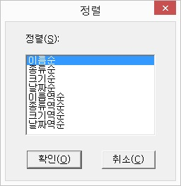

기본적으로 탐색창의 목록은 폴더와 파일, 드라이브 그룹을 기준으로 이름에 의한 오름차순 정렬이 되어 있습니다. 사용자는 자신이 원하는 대로 정렬 기준을 변경할 수 있습니다.
기능키를 실행하면 '정렬' 대화상자가 출력되며, 목록 중에서 사용자가 원하는 기준을 선택한 뒤 '확인' 버튼을 누릅니다.

사용할 수 있는 정렬 기준은 다음과 같습니다.
1. 이름순: 이름을 중심으로 오름차순 정렬합니다.
오름차순 정렬은 알파벳을 기준으로 'a', 'b', 'c', 'd' ... 순으로 정렬되는 것을 의미합니다.
2. 종류순: 확장자를 중심으로 오름차순 정렬 합니다. 폴더의 경우에는 이름순으로 정렬합니다.
3. 크기순: 파일 크기를 중심으로 오름차순 정렬합니다. 폴더의 경우에는 이름순으로 정렬합니다.
4. 날짜순: 파일과 폴더의 날짜를 중심으로 오름차순 정렬합니다.
5. 이름역순: 이름을 중심으로 내림차순 정렬합니다.
6. 종류역순: 확장자를 중심으로 내림차순 정렬합니다. 폴더의 경우에는 이름역순으로 정렬합니다.
7. 크기역순: 파일의 크기를 중심으로 내림차순 정렬합니다. 폴더의 경우에는 이름역순으로 정렬합니다.
8. 날짜역순: 파일이나 폴더의 날짜를 중심으로 내림차순 정렬합니다.
파일의 속성 중에는 숨김 속성이 있습니다. 시스템적으로 중요한 파일이거나 사용자가 임의데로 변경해서는 안 될 파일들은 대부분 숨김 속성을 주어 파일을 보호합니다. 이렇게 숨겨진 파일들은 센스 독서기의 탐색창에서도 역시 나타나지 않습니다.
하지만 숨겨진 파일의 경우에도 목록에 나타내어 사용해야 하는 경우가 있는데, 이런 경우 '숨은 파일 출력' 기능을 사용합니다.
기본적으로 탐색창에서는 현재 폴더의 모든 하위 폴더와 파일을 표시합니다. 그러나 경우에 따라서는 특정한 확장자를 가진 파일이나,
특정한 이름으로 시작되는 파일 등 일부만을 출력해 놓고 작업하는 것이 편리할 때가 있습니다. 이런 경우 와일드 카드를 사용해 원하는 파일만을 출력할 수 있습니다.
기능을 실행하면 '와일드 카드 입력' 대화상자가 나타나고 이곳에 와일드 카드를 포함하는 문자열을 입력하여 목록에 나타낼 방식을 정합니다.
예를들어 '*.txt'라고 입력하면 확장자가 txt인 파일들만 나타내 주고, 'a??.doc'라고 입력하면 'a'로 시작하고 이름이 3글자인 '.doc' 파일들만을 출력해 주게 됩니다. 다시 모든 파일을 출력하려면 '*.*'를 입력하면 됩니다.
와일드 카드를 사용하여 나타날 목록을 제한한 경우라도 폴더를 이동하면 다시 모든 내용을 표시해 줍니다.
씨디롬에 씨디를 교체하는 경우 등 목록의 내용을 재구성할 필요가 있을 때 '새로 고침' 기능을 사용합니다.
만약 '새로 고침' 기능 사용 이전에 선택된 폴더나 목록이 있었다면 선택은 모두 해제됩니다.